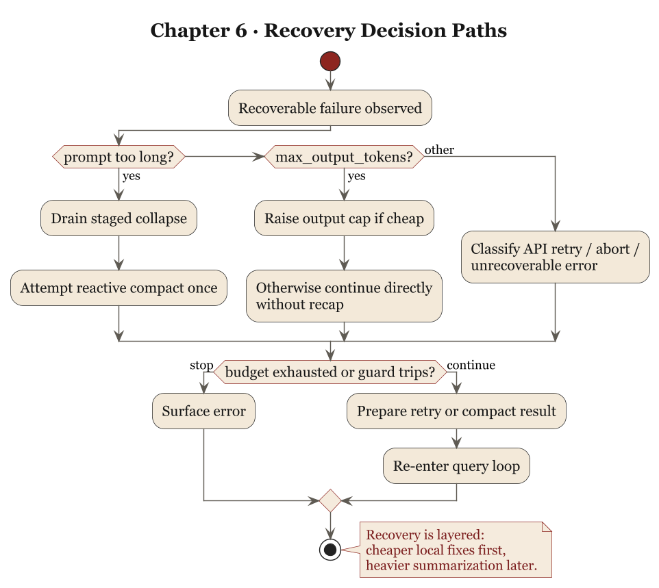
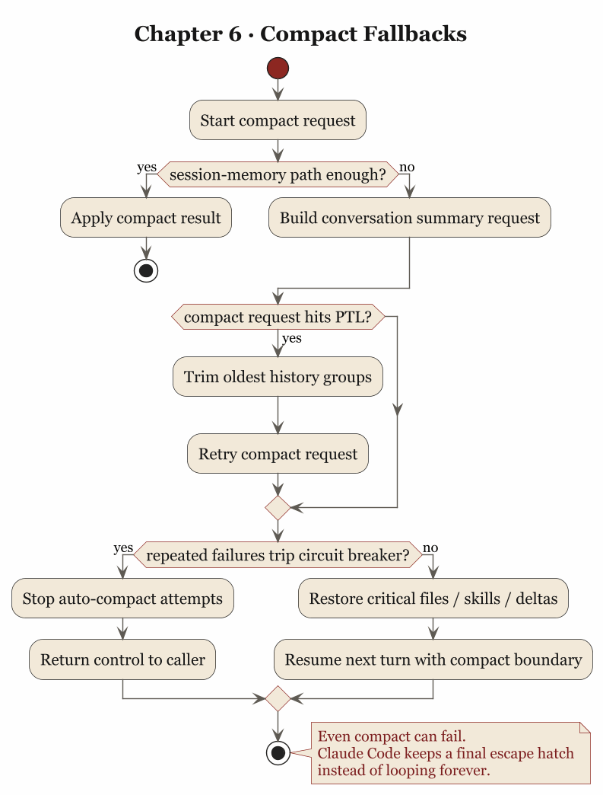

第 6 章 错误与恢复：出错后仍能继续工作的代理系统
6.1 工程世界最不值得相信的话，就是“正常情况下”
很多系统设计文档里，最常见的偷懒方式，就是先讲一遍“正常情况下”的流程，仿佛只要主路径足够漂亮，错误就会自动显得次要。可代理系统一旦进入真实运行环境，这种写法通常很快就会露馅。因为模型会被截断，请求会超长，hook 会制造回环，工具会中断，fallback 会发生，恢复逻辑本身也会失手。
所以，判断一个代理系统成熟不成熟，不能只看它回答顺畅的时候有多像个人，而要看它出故障的时候像不像系统。前者容易靠一点 prompt 工程粉饰，后者只能靠运行时纪律。
Claude Code 在这一点上的可取之处，是它没有假装自己不会出错。相反，源码里反复体现出一种冷静判断：错误属于主路径，恢复则是必须提前设计好的运行机制。
6.2 prompt too long 是一种必然周期
对长会话代理来说，prompt too long 是一种迟早会来的季节变化。你如果把它当偶发异常，系统迟早会被它教育。
Claude Code 的 query.ts 就没有把它当偶发异常处理。在 src/query.ts 里，系统甚至会“暂时扣下”这类错误，不立刻把它原样抛给用户。流式阶段里，withheld 逻辑会识别 recoverable errors，包括：
- prompt too long
- media size error
- max output tokens
这件事的意思很明确：有些错误要先交给恢复系统试着处理，再决定是否展示给用户。这个顺序很关键，因为用户真正关心的通常是系统还能不能继续干活。
在 prompt too long 的分支上，Claude Code 先尝试更便宜、更保守的恢复路径。若启用了 context collapse，就先 recoverFromOverflow()，把已经 staged 的 collapse 提交掉；如果还不行，再进入 reactiveCompact.tryReactiveCompact()。也就是说，恢复是分层的：先排空已知积压，再做更重的全文压缩，不会一上来就重建世界。
这种次序特别有工程味。因为真正好的恢复系统，不会把所有错误都交给“最重的一把锤子”。它会先试图保住最细粒度的上下文，再在必要时接受更粗糙的摘要替代。
6.3 响应式 compact 说明，恢复的关键在于别把自己逼进死循环
很多系统做恢复时容易犯一个愚蠢但常见的错误：一旦发现错误可恢复，就不停重试，直到把错误从偶发事件升级成资源灾难。
Claude Code 对这件事非常警惕。query.ts 里有两个地方都能看出这种警惕。
第一处，是 hasAttemptedReactiveCompact。一旦 reactive compact 已经试过，再次遇到同类问题时，系统不会装傻重来。因为工程师很明白：如果 compact 之后还是不行，那么继续 compact 大概率只是在把同一种失败换个姿势再演一次。
第二处，是 stop hooks 的防死循环处理。源码里有非常直白的注释：如果 prompt too long 之后还让 stop hooks 介入，就可能出现 death spiral，路径大致是：
错误 -> hook blocking -> retry -> 错误 -> hook blocking
这话写得一点也不文学，却比许多文学都诚实。因为它承认系统里最危险的错误，是失败分支和恢复分支彼此咬住，开始无限自我复制。
所以 Claude Code 在 prompt too long 无法恢复时，会直接 surface 错误并跳过 stop hooks。原因很简单：这时候继续走形式流程，只会让坏事更有仪式感。
6.4 max_output_tokens 的处理说明，恢复要以续写为主
大模型产品有个很坏的习惯，一旦输出截断，就先来一段很客气的废话：抱歉，刚才被截断了，我来总结一下。听上去态度不错，实际上对工作几乎没帮助。
Claude Code 在 src/query.ts:1185 往后的处理，明显更接近工程系统。它先试一种成本较低的恢复：如果当前使用的是较保守 cap，就把 maxOutputTokensOverride 提升到更高值，直接重跑同一请求。注意，这一步没有插入 meta message，也没有让模型先寒暄，系统先给它一次把原任务做完的机会。
如果更高 cap 也不够，再进入第二层恢复：给模型追加一条 meta user message，内容非常实在，大意是：
直接继续，不要道歉，不要 recap，若中断发生在半句，就从半句接着写；剩余工作拆小一点。
这是一条很有启发意义的系统指令。它说明 Claude Code 对恢复的理解，是尽量保持任务连续性，不要把额外 token 花在体面动作上。在长任务里，这种区别非常大。因为每一次截断后的 recap，都会进一步消耗预算，并且增加语义漂移。最后系统做的就不再是任务本身，而是一轮轮地回顾自己做任务。
所以对 max_output_tokens 来说，较好的恢复通常是续写。Claude Code 在这里优先保证任务连续性，而不是补充礼貌性说明。
6.5 auto compact 的失败熔断，说明恢复系统自己也要受治理
如果说前面讲的是“单次错误怎么救”，那 src/services/compact/autoCompact.ts 处理的就是另一个层面的问题：当恢复机制本身不断失败时，怎么办。
源码的回答很简单，也很正确：别一直试。
AutoCompactTrackingState 里专门有 consecutiveFailures。一旦失败次数超过阈值，shouldAutoCompact 即便判断“按理说该 compact 了”，系统也会直接跳过。源码注释甚至给出过往数据：曾有大量 session 在连续 autocompact failure 上白白烧掉海量 API calls，所以必须加 circuit breaker。
这里特别值得强调的一点是，失败熔断意味着承认当前恢复手段在这个局面里已经失效。一个真正成熟的系统，不能只会在成功时记录指标，也得在失败时懂得收手。不会收手的恢复系统，和不会刹车的汽车差不多，理论上都叫系统，实际上都不该上路。
从 Harness Engineering 角度看，这里可以抽出一条很硬的原则：任何自动恢复机制都必须可计数、可限次、可熔断。否则恢复会从保险丝变成新的起火点。
6.6 compact 自己也会爆，所以连“修复动作”都需要修复策略
compactConversation() 这段代码还有一个很动人的现实主义时刻：它承认 compact 请求自己也可能 prompt too long。
这件事看上去带一点黑色幽默。系统为了缩短上下文去发摘要请求，结果摘要请求也因为上下文太长而失败。很多人不喜欢这种情形，因为它暴露得过于直接。但工程系统首先要解决的是继续运行，而不是保持表面完整。
Claude Code 的处理方式，是在 compact.ts 里引入 truncateHeadForPTLRetry()。当 compact 自己太长时，系统会先把更早的 API round 成组地从头部剥掉，再重试 compact，避免让用户卡在“连压缩都压不动”的状态里。
这里的取舍很清楚：这种修复有损，也会丢历史，但它优先保证用户不被完全锁死。源码注释写得很实在，这是一种 last-resort escape hatch。
这种处理方式的价值，在于它没有回避现实约束。系统快要窒息时，优先级是先恢复呼吸，再讨论信息保真度。这个判断不追求漂亮，但很实用。


6.7 abort 语义说明，中断也属于错误恢复的一部分
很多人把 abort 单独归到交互体验，不愿意把它放进错误恢复讨论里。从运行时角度看，中断就是一种必须被正确回收的失败态。
Claude Code 在两个层面都认真处理了这件事。
一层在 query.ts。如果 streaming 时用户打断，系统会先消费 StreamingToolExecutor.getRemainingResults()，为已经发出但尚未完成的工具生成 synthetic tool_result，确保前面承诺过的 tool_use 不会变成悬空债务。
另一层在 compact.ts。源码里专门把 compact 的 abort controller 传给 forked agent，并处理 APIUserAbortError，防止“被用户按了 Esc 的 compact”误算成一次成功摘要。
这两处连在一起看，意思很明确：中断不只是“用户不想看了”，而是一次需要正确收尾的状态转移。错误恢复如果只管异常、不管中断，最终会留下大量语义半残的执行轨迹。那种轨迹通常短期内没人查，长期看全是祸根。
6.8 错误处理真正保护的，是执行叙事的一致性
把这些源码放在一起看，会发现 Claude Code 对错误与恢复的理解，有一个很核心但常被忽略的目标：保护执行叙事的一致性。
什么叫执行叙事？很简单，就是系统还能不能说清楚：
- 我刚才试图做什么
- 为什么没做成
- 我用了什么恢复路径
- 现在是继续、停止，还是换轨
query.ts 里的 transition.reason，maxOutputTokensRecoveryCount，hasAttemptedReactiveCompact，以及 compact boundary、synthetic error message 这些东西，都是为了让这条叙事线不断裂。它们是为了让系统自己别失忆。
一个没有叙事一致性的代理系统，表面也许还能继续输出，但它的内部已经开始散了。今天用户看到的是多说几句废话，明天运维看到的就是为什么这里一会儿是 hook retry，一会儿是 compact retry，后天团队看到的则是这个系统出了问题谁都说不清它到底经历了什么。
所以错误恢复真正修补的，不只是错误本身，还有系统对自己行为的解释能力。解释能力一断，系统就会从工程对象退化成玄学对象。
6.9 从源码里可以提炼出的第六个原则
这一章最后可以收成一句话：
代理系统的体面，体现在错误发生后仍能维持可解释、可限界、可继续的执行秩序。
Claude Code 的源码在几个点上共同支持这个判断：
query.ts会暂时扣下可恢复错误，先交给恢复分支处理，说明错误要先尝试转化- prompt-too-long 恢复先走 collapse drain，再走 reactive compact，说明恢复路径按成本和破坏性分层
hasAttemptedReactiveCompact与 stop hook guard 明确防止死循环，说明恢复本身也要受治理max_output_tokens先提 cap，再要求模型直接续写，说明恢复的目标是延续任务，不是补充礼貌动作autoCompact.ts的 consecutive failure 与 circuit breaker，说明自动恢复必须可熔断compact.ts对 compaction 自身的 prompt-too-long 也有降级修复，说明连修复动作本身都要有恢复策略
如果把这些抽成可迁移的工程原则，大概是这样：
- 错误恢复要分层，不要所有问题都打一把重锤
- 恢复逻辑必须防止自我回环
- 自动恢复需要计数和熔断
- 截断后的最佳恢复通常是续写，不是总结
- 中断也是一种需要语义收尾的失败态
- 一个系统是否可靠，最终要看它出错后还能不能把自己的行为讲明白
下一章要进入另一类更棘手的问题：多代理与验证。因为当一个系统不再只是“自己出错自己救”，而开始把任务分给别的 agent，再把结果收回来复核，错误与恢复的问题就从单线程秩序升级成了组织问题。那时你面对的不只是一个模型会不会失手，而是一群不稳定执行体如何彼此约束。